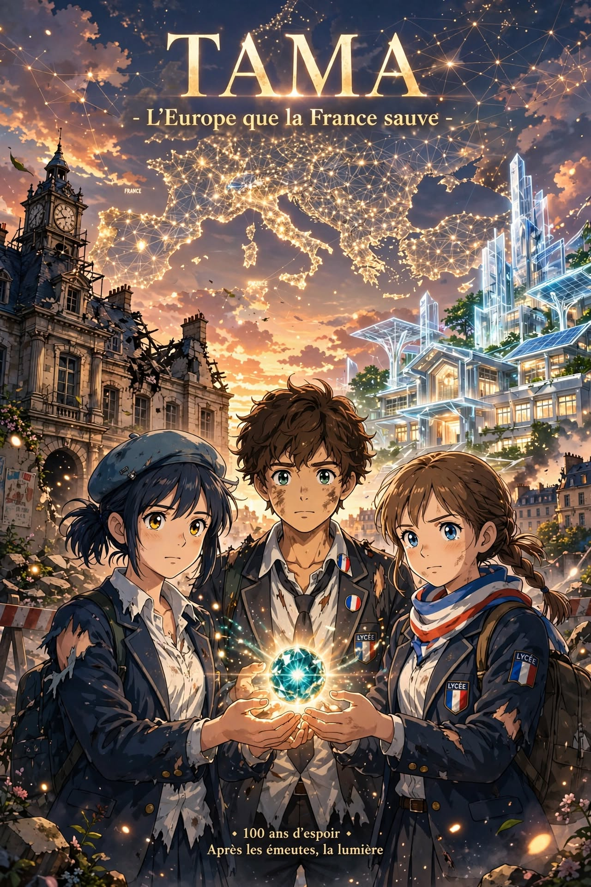
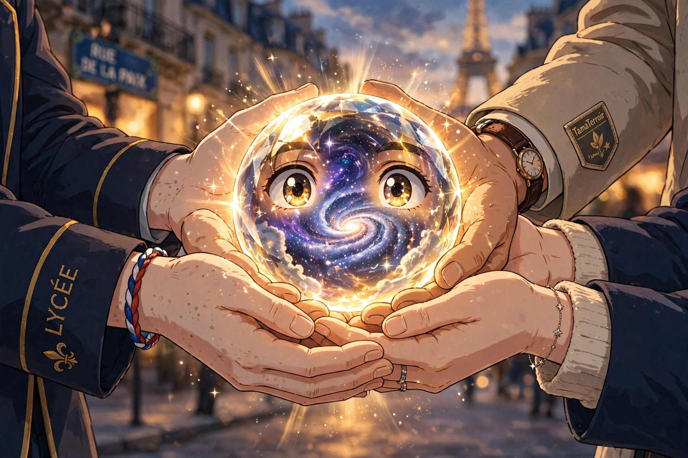
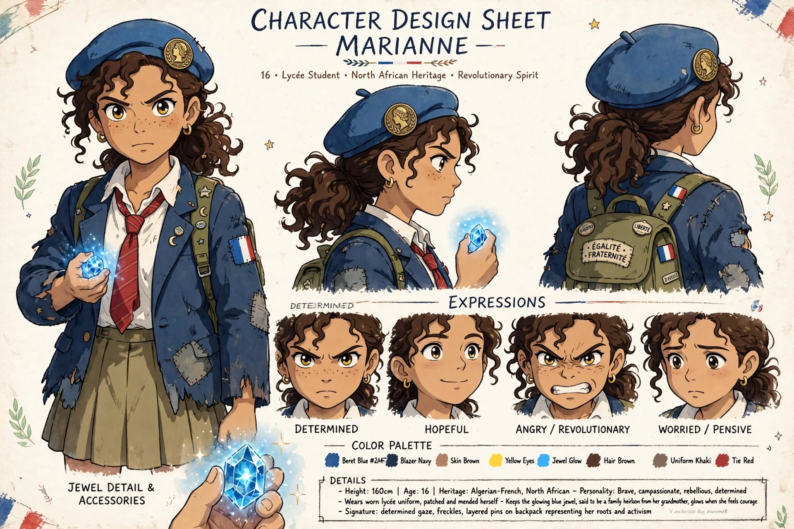
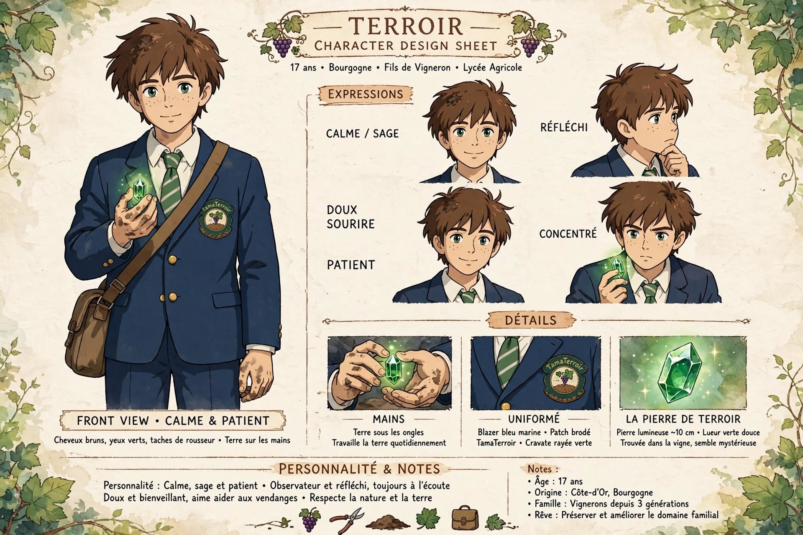
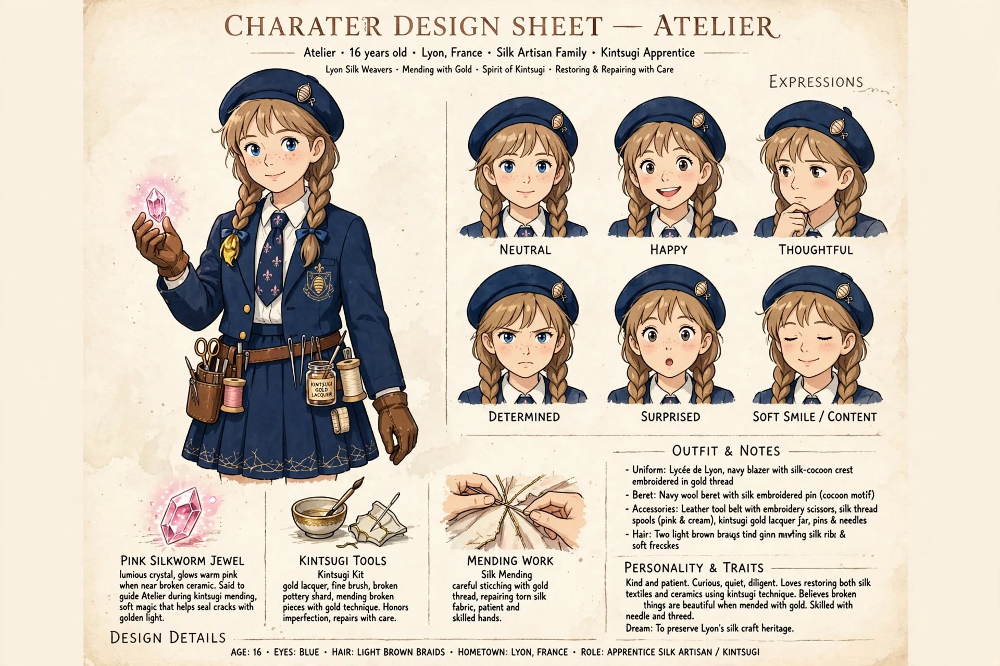

HTML Pages
Tamaterroir: Paris — ストーリーボード
3分予告編の全8シーンを画像付きで構成したストーリーボード。フランス語セリフ、日本語ナレーション、演出指示を収録。
Open
Tamaterroir: Paris — ナレーション・プレイヤー
ナレーション台本を再生形式で閲覧できるプレイヤー。タイムコード付きでシーンを順に追体験。
Open
Scene Images

SCENE 1 — 教室と青い欠片

SCENE 2 — リモージュの炎

SCENE 3&4 — 玉の中の目

SCENE 5&6 — 金継ぎとテロワール

SCENE 7&8 — 合体と反転